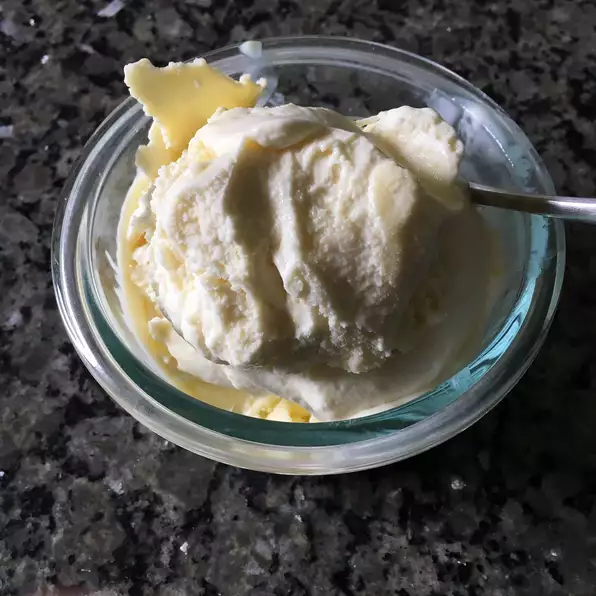

Lemon Ice Cream

Description
Tart and tangy ice cream that is very refreshing in the summer!
Ingredients
- 2 cups heavy whipping cream
- 1 cup half-and-half cream
- 1 ⅛ cups white sugar
- 3 tablespoons grated lemon zest
- 5 egg yolks
- ¾ cup fresh lemon juice
Steps
- Combine heavy cream, half and half, sugar, and lemon zest in a saucepan; bring to a simmer over low heat. Cook and stir until sugar is dissolved, about 5 minutes. Remove from heat. Cover saucepan and allow the mixture to steep for 10 minutes.
- Uncover pan and bring back to a simmer over low heat. Beat the egg yolks in a bowl. Gradually stir one cup of the hot cream mixture into the eggs, several tablespoons at a time. This will help to bring the eggs up to temperature without scrambling them. Stir the egg mixture back into the cream mixture in the saucepan. Cook and stir over low heat until the mixture just coats the back of a spoon, 5 to 10 minutes. Transfer to a large bowl; cover. Refrigerate overnight.
- Stir the lemon juice into the cold ice cream mixture. Freeze in a 4 to 5 quart ice cream maker according to manufacturer's directions. Transfer ice cream to a lidded freezer container, and freeze for 4 hours to ripen flavors before serving.